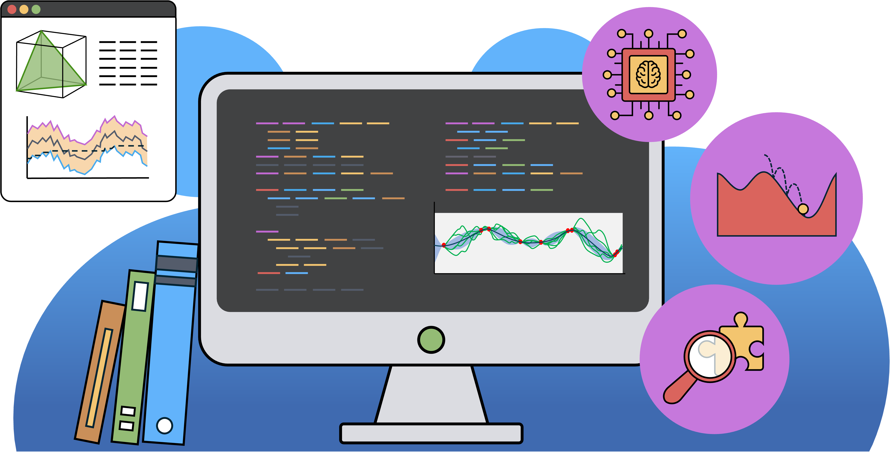

Finance & Artificial Intelligence
I use AI so solve financial problems, and I love what I do.


I use AI so solve financial problems, and I love what I do.
As a PhD researcher specializing in the intersection of machine learning, deep learning, and finance, I have spent the last several years developing innovative computational methods to tackle complex, high-dimensional optimization problems. My doctoral thesis focused on applying machine learning techniques to solve dynamic recursive optimization challenges, such as macroeconomic modeling and portfolio management with transaction costs. This experience has honed my ability to apply cutting-edge AI methods to real-world finance problems.
Beyond finance, I am passionate about leveraging my expertise in machine learning and deep learning to drive innovation across industries. Whether it's developing models to optimize business decisions, analyze large datasets, or solve high-dimensional problems, I am excited about the opportunity to contribute my skills in a fast-paced, industry environment.
With a strong foundation in both research and practical applications, I am eager to transition into roles such as machine learning engineer, data scientist, or finance-focused ML expert. I thrive on problem-solving and am particularly motivated by roles where I can continue to push the boundaries of machine learning and its real-world impact.
I value thoughtful inquiry and clear communication to make insights accessible.
I build structured models and pipelines to answer complex questions and provide meaningful answers.
I love tackling technical challenges and finding innovative solutions to complex problems.
I'm always open to discussing machine learning applications in finance and beyond.
Get in touch